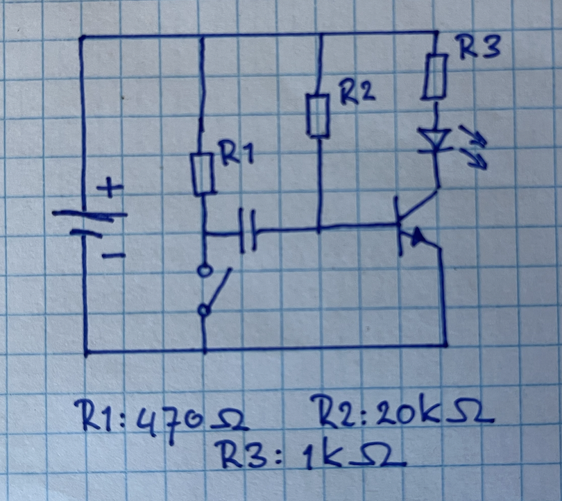
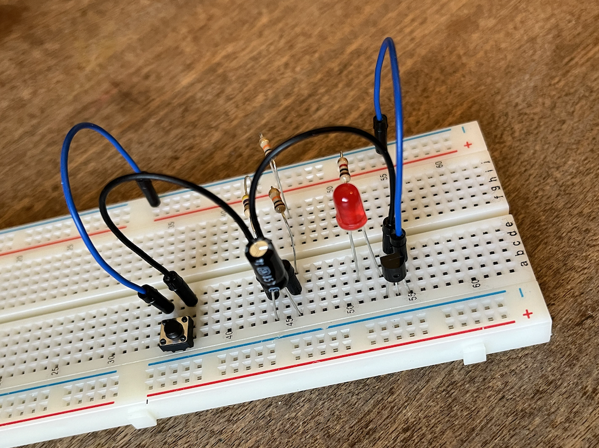

Preparation
Last week, we introduced several basic components: resistors, capacitors and transistors. In this week, we will use this knowledge to have several of these components work together.
TBDExercise 1: Timing an event
Timing is an essential part in most computing processes, and the system we are creating here is used in lots of modern day systems (of course in integrated circuits and a bit more acccurate, but still).
Have a look at the circuit below. With the switch open, current flows from the positive source throught R2 to the base of the transistor, thereby allowing current to flow over R3 and the LED back to the ground.
When we close the switch, current flows over R1 to the capacitor in the middle, allowing it to charge itself. However, as you know a fully charged capacitor can be seen as an open switch, so the previous flow of the current (with the switch open) is restored once the capacitor is completely charged.
 
Re-create this circuit on your own breadboard and see what happens when you close the switch. Can you explain in your own words why the circuit functions as it does? Why is it important that R2 ≫ R1? Experiment with different values for the capacitor; can you explain the differences in behavior?
Exercise 2: make a basic flip-flop
Have a look at this example and the explanation of a basis flip-flop circuit. Though in this case the circuit uses different NPN-transistors than we have, you can realise it with the same transistors that we have used for the gates.

Re-create this circuit on your own breadboard. Experiment with different values for the resistors and/or the capacitors. Make sure you understand why the circuit is doing what it is doing. Can you replace one (or both) of the resistors with a sensor...?
Document your process using both text and photographs and write a small piece of text of the workings of the circuit. Be sure to upload both the documentation and the explanation on your teams student folder before the next session. As you are working in pairs, upload the documents on both your student folders.